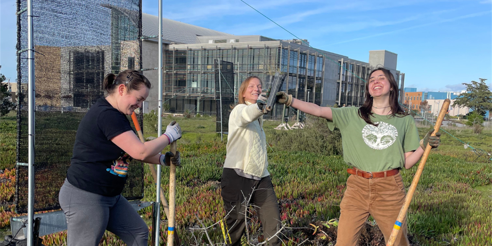

CSUMB Sustainability Plan

Three Core Goals
- Reduce greenhouse gas emissions and achieve carbon neutrality by 2030
- Plant 2,030 trees
- Divert 90% of waste from landfill
Further Aligning sustaniablility & Social Justice
- Promote Inclusive Sustainability
- Deepen the campus understanding of how sustainability and social justice are interconnected and respond to opportunities to address intersectional issues
- Ensure all students wanting careers in sustainability, environmental conservation, or similar fields are included and have access to opportunities that will further their professional ambitions